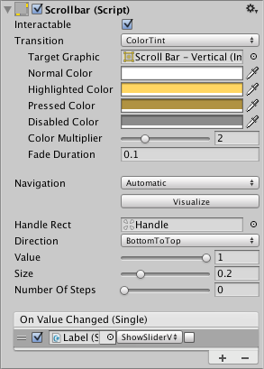

Scrollbar 让用户滚动查看无法一次完整显示的图像或其他视图。类似的 Slider 用于选择数值，而非滚动。常见例子包括文本编辑器右侧的垂直滚动条，以及查看大图像或地图时的水平／垂直滚动条。


属性（Properties）
| 属性 | 功能说明 |
|---|---|
| 可交互（Interactable） | 决定是否接受输入，参阅 Interactable。 |
| 状态转换（Transition） | 决定控件如何通过视觉变化响应用户操作，参阅 Transition Options。 |
| 导航（Navigation） | 决定控件之间的导航顺序，参阅 Navigation Options。 |
| 填充矩形（Fill Rect） | 控件背景区域使用的图形。 |
| 手柄矩形（Handle Rect） | 可拖动手柄使用的图形。 |
| 方向（Direction） | 拖动手柄时 Value 增加的方向：Left To Right、Right To Left、Bottom To Top 或 Top To Bottom。 |
| 值（Value） | 滚动条的初始位置值，范围为 0.0～1.0。 |
| 尺寸（Size） | 手柄占滚动条长度的比例，范围为 0.0～1.0。 |
| 离散步数（Number Of Steps） | 允许的不同滚动位置数量。 |
事件（Events）
| 属性 | 功能说明 |
|---|---|
| 值改变事件（On Value Changed） | 当前 Value 改变时调用的 UnityEvent，可将值作为 float 类型的动态参数传递。 |
详细说明（Details）
Scrollbar 的 Value 由手柄位置决定，用两端之间的比例表示。默认从左到右的滚动条左端为 0.0，右端为 1.0，中点为 0.5。Direction 设为 Top To Bottom 或 Bottom To Top 可改为垂直滚动条。
Scrollbar 与 Slider 的明显区别是手柄尺寸可变化，用于表示可滚动距离。视图只有很短的可滚动范围时，手柄会占据滚动条的大部分，只能小幅移动。
Scrollbar 的唯一事件是 On Value Changed，用户拖动手柄时触发，当前值通过 float 参数传给回调。典型用途包括：
- 垂直滚动文本。
- 水平滚动时间轴。
- 成对使用，在水平和垂直方向滚动大图，查看放大的局部。手柄尺寸反映缩放程度以及可滚动距离。